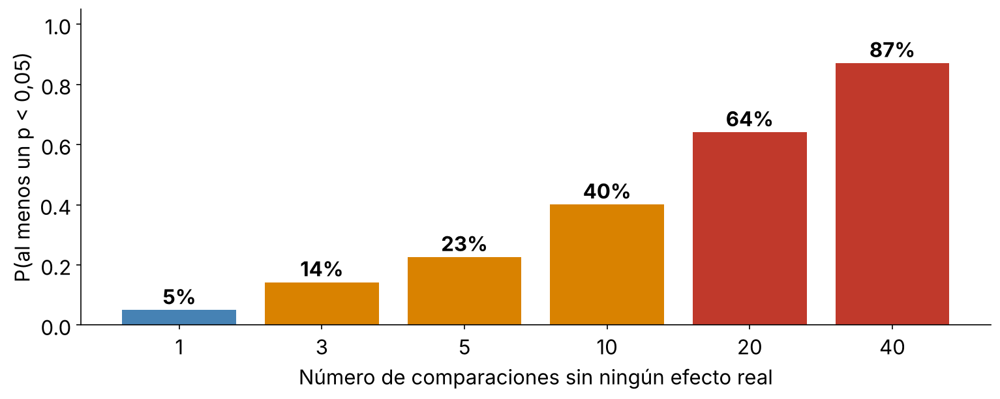
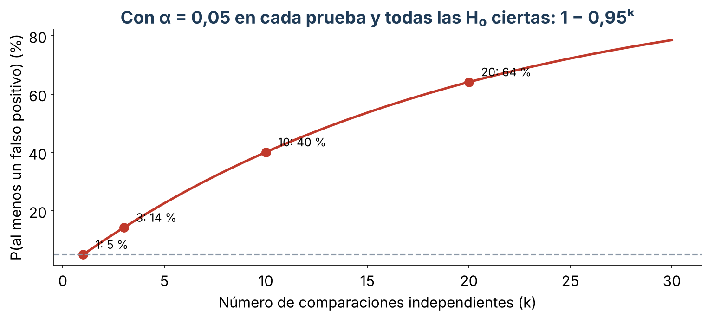
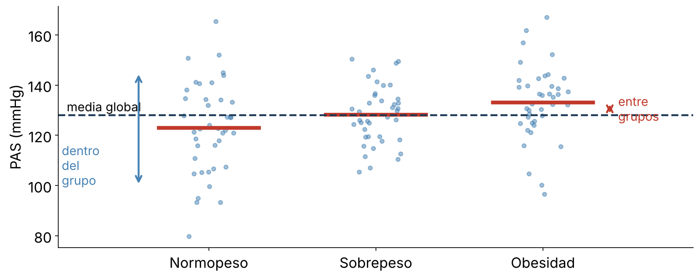
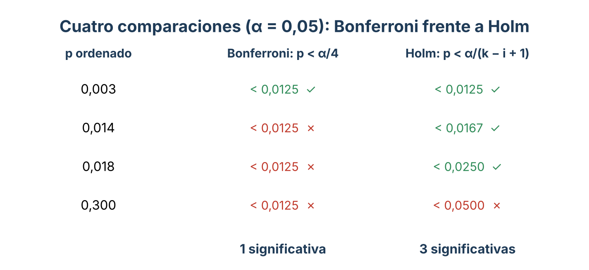
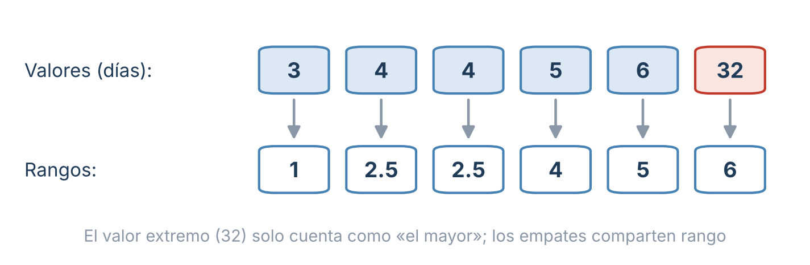

Bioestadística (1964) · Grado en Medicina · Curso 2027-2028
Tema 260Comparación de más de dos grupos: análisis de la varianza y pruebas no paramétricas
Módulo 5. Generalización de conclusiones
Evaluación: el examen del Módulo 5 se hace con Colab. Practica ejecutando e interpretando cada análisis.
Fernando Borrás Rocher · Universidad Miguel Hernández de Elche · CC BY 4.0
Objetivos de aprendizaje
Al terminar esta sesión serás capaz de:
- Explicar por qué no se deben hacer muchas pruebas t para comparar más de dos grupos.
- Aplicar e interpretar el análisis de la varianza (ANOVA) de un factor y su tamaño del efecto (η²).
- Identificar qué grupos difieren con comparaciones post hoc (Tukey) y corregir las comparaciones múltiples (Bonferroni y Holm).
- Aplicar las pruebas no paramétricas de Mann-Whitney, Wilcoxon y Kruskal-Wallis cuando proceda.
- Reconocer el p-hacking y la importancia de registrar el análisis antes de ver los datos.
Cómo usar esta presentación
Usa el selector de arriba para dar el tema en una sesión completa o en dos sesiones intercaladas.
🎓 Sesión de clase magistral
- 1. Caso clínico de partida 5 min
- 2. Conceptos clave 10 min
- 5. Autoevaluación 5 min
Explica los conceptos, haz la pausa activa y cierra con las ideas clave.
💻 Sesión de Colab
- 3. Demostración: ANOVA, post hoc y alternativas 20 min
- 4. Práctica en la app Bioestadística 10 min
- 5. Autoevaluación 5 min
Cada estudiante abre su copia del cuaderno, predice el resultado y después ejecuta la celda.
Teclas: ← → para pasar · N notas del profesor · M cambiar de modo · F pantalla completa · Esc índice.
1. Caso clínico de partida
Buscar hasta encontrar algo «significativo»

- Con 20 comparaciones sin ningún efecto real, la probabilidad de algún p < 0,05 es del 64 %.
- Lo que se encuentra buscando sin plan es una hipótesis, no una conclusión.
2. Conceptos clave
2.1 El problema de las comparaciones múltiples

Supón que cada prueba tiene α = 0,05 y que las hipótesis nulas son ciertas. La probabilidad de al menos un falso positivo en k pruebas independientes es $1 - 0{,}95^k$:
| Comparaciones | Probabilidad de al menos un falso positivo |
|---|---|
| 1 | 5 % |
| 3 (tres grupos dos a dos) | 14 % |
| 10 (cinco grupos dos a dos) | 40 % |
| 20 | 64 % |
2. Conceptos clave
2.2 El ANOVA de un factor
ANOVA: variabilidad entre grupos frente a dentro de los grupos

- F = varianza entre grupos / varianza dentro de los grupos.
- Un ANOVA significativo dice que alguna media difiere; Tukey dice cuáles.
2. Conceptos clave
2.3 Correcciones por comparaciones múltiples

| Método | Cómo funciona | Característica |
|---|---|---|
| Bonferroni | Multiplica cada p por el número de comparaciones k | Sencillo, muy conservador |
| Holm | Ordena los p y aplica umbrales escalonados | Siempre al menos tan potente como Bonferroni; recomendado |
| Tukey | Específico para todas las parejas tras un ANOVA | El estándar post hoc |
2. Conceptos clave
2.4 Pruebas no paramétricas
Las pruebas no paramétricas trabajan con rangos

- Ordenan los valores y usan su posición: no suponen normalidad y resisten a los atípicos.
- Útiles con muestras pequeñas, datos muy asimétricos y escalas ordinales (dolor, Rankin).
Pausa activa
Piensa 30 segundos, comenta con quien tienes al lado y vota.
Quieres comparar la HbA1c media entre cuatro pautas de insulina. ¿Qué análisis haces?
En la sesión de Colab
Lo que acabas de ver se comprueba con datos en el cuaderno del Tema 260.
- Abre el cuaderno y guarda tu copia: Archivo → Guardar una copia en Drive.
- Ejecuta la celda de configuración.
- Ve a la demostración y predice cada resultado antes de ejecutar.
3. Demostración: ANOVA, post hoc y alternativas
3.1 PAS según la categoría de IMC
▶ En tu cuaderno: 3.1 PAS según la categoría de IMC. Antes de ejecutar, escribe qué esperas obtener.
import numpy as np
import pandas as pd
from scipy import stats
import matplotlib.pyplot as plt
import seaborn as sns
cohorte = pd.read_csv("https://raw.githubusercontent.com/fborrasumh/bioestadistica/main/datos/cohorte_limpia.csv")
categorias = ["Normopeso", "Sobrepeso", "Obesidad"]
cohorte["categoria_imc"] = pd.cut(cohorte["imc"], [0, 25, 30, 100], labels=categorias, right=False)
datos = cohorte.dropna(subset=["pas_mmHg", "categoria_imc"])
print(datos.groupby("categoria_imc", observed=True)["pas_mmHg"].agg(["count", "mean", "std"]).round(1))
plt.figure(figsize=(7, 4))
sns.boxplot(data=datos, x="categoria_imc", y="pas_mmHg", order=categorias)
plt.xlabel("Categoría de IMC (< 25 · 25 a 29,9 · ≥ 30 kg/m²)")
plt.ylabel("PAS (mmHg)")
plt.show()Las desviaciones típicas son parecidas (la mayor no llega a 1,5 veces la menor) y las distribuciones son razonablemente simétricas: el ANOVA clásico es adecuado.
3. Demostración: ANOVA, post hoc y alternativas
3.2 El ANOVA
▶ En tu cuaderno: 3.2 El ANOVA. Antes de ejecutar, escribe qué esperas obtener.
grupos = [datos.loc[datos["categoria_imc"] == k, "pas_mmHg"] for k in categorias]
anova = stats.f_oneway(*grupos)
media_global = datos["pas_mmHg"].mean()
sc_entre = sum(len(g) * (g.mean() - media_global) ** 2 for g in grupos)
sc_total = ((datos["pas_mmHg"] - media_global) ** 2).sum()
k, n = len(grupos), len(datos)
print(f"F = {anova.statistic:.2f} con {k - 1} y {n - k} grados de libertad, p = {anova.pvalue:.1e}")
print(f"η² = {sc_entre / sc_total:.3f}")Hay evidencia de que la PAS media no es igual en las tres categorías. Pero η² indica que la categoría de IMC explica solo una pequeña parte de la variabilidad de la PAS. Influyen muchos otros factores: edad, tratamiento, sal, genética. Esto es habitual en Medicina: un factor puede tener un efecto real y relevante sobre la media sin explicar gran parte de la variabilidad individual.
3. Demostración: ANOVA, post hoc y alternativas
3.3 ¿Qué grupos difieren? Tukey
▶ En tu cuaderno: 3.3 ¿Qué grupos difieren? Tukey. Antes de ejecutar, escribe qué esperas obtener.
tukey = stats.tukey_hsd(*grupos)
ic = tukey.confidence_interval(confidence_level=0.95)
for i in range(k):
for j in range(i + 1, k):
print(f"{categorias[j]:>10} − {categorias[i]:<10}: {-tukey.statistic[i, j]:5.1f} mmHg "
f"(IC 95 %: {-ic.high[i, j]:5.1f} a {-ic.low[i, j]:5.1f}) · p ajustada = {tukey.pvalue[i, j]:.4f}")Los obesos tienen una PAS media unos 11 mmHg mayor que los pacientes con normopeso y unos 7 mmHg mayor que los que tienen sobrepeso. La diferencia entre sobrepeso y normopeso (4 mmHg) no alcanza la significación tras el ajuste: su IC incluye el 0.
3. Demostración: ANOVA, post hoc y alternativas
3.4 La alternativa no paramétrica: Kruskal-Wallis
▶ En tu cuaderno: 3.4 La alternativa no paramétrica: Kruskal-Wallis. Antes de ejecutar, escribe qué esperas obtener.
kw = stats.kruskal(*grupos)
print(f"Kruskal-Wallis: H = {kw.statistic:.2f}, p = {kw.pvalue:.1e}")
print("Medianas:", datos.groupby("categoria_imc", observed=True)["pas_mmHg"].median().to_dict())Con datos bien comportados, el ANOVA y Kruskal-Wallis llegan a la misma conclusión. El ANOVA aporta además las diferencias de medias con sus intervalos, que son más fáciles de interpretar clínicamente.
3. Demostración: ANOVA, post hoc y alternativas
3.5 La búsqueda del residente: corregir las comparaciones múltiples
▶ En tu cuaderno: 3.5 La búsqueda del residente: corregir las comparaciones múltiples. Antes de ejecutar, escribe qué esperas obtener.
from statsmodels.stats.multitest import multipletests
variables = ["pas_mmHg", "pad_mmHg", "colesterol_mg_dl", "hdl_mg_dl", "glucemia_mg_dl", "imc", "peso_kg", "edad"]
valores_p = []
for v in variables:
x = cohorte.dropna(subset=[v])
valores_p.append(stats.f_oneway(*[x.loc[x["centro"] == ce, v] for ce in x["centro"].unique()]).pvalue)
_, p_bonf, _, _ = multipletests(valores_p, method="bonferroni")
_, p_holm, _, _ = multipletests(valores_p, method="holm")
resultados = pd.DataFrame({"p sin corregir": valores_p, "p Bonferroni": p_bonf, "p Holm": p_holm}, index=variables)
resultados.round(3)La glucemia «significativa» deja de serlo al tener en cuenta que se han hecho 8 comparaciones. Con 8 variables sin ninguna diferencia real, lo esperable es que alguna salga con p < 0,05 un tercio de las veces. El resultado puede ser real, pero es una hipótesis para un nuevo estudio, no una conclusión.
3. Demostración: ANOVA, post hoc y alternativas
3.6 Simulación: el p-hacking funciona
▶ En tu cuaderno: 3.6 Simulación: el p-hacking funciona. Antes de ejecutar, escribe qué esperas obtener.
rng = np.random.default_rng(seed=260)
estudios_con_hallazgo = 0
for _ in range(2000):
# 20 variables sin ninguna diferencia real entre 3 centros de 50 pacientes
p = [stats.f_oneway(*rng.normal(0, 1, (3, 50))).pvalue for _ in range(20)]
estudios_con_hallazgo += min(p) < 0.05
print(f"Estudios con al menos un «hallazgo» significativo: {estudios_con_hallazgo / 2000:.0%}")Casi dos de cada tres estudios encuentran algo «significativo» en datos que son puro ruido. Por eso los ensayos clínicos deben registrar su variable principal y su plan de análisis antes de empezar (ClinicalTrials.gov, EU CTR). Los análisis no previstos se presentan como exploratorios.
Ampliación
Ampliación: Mann-Whitney y Wilcoxon
Dolor en una escala de 0 a 10 tras dos técnicas analgésicas, en 14 y 15 pacientes (variable ordinal, muestras pequeñas). Y en 12 pacientes antes y después de una sesión de fisioterapia.
tecnica_a = np.array([2, 3, 3, 4, 2, 5, 3, 1, 4, 3, 2, 6, 3, 2])
tecnica_b = np.array([4, 5, 6, 3, 5, 7, 4, 6, 5, 8, 4, 5, 6, 3, 5])
mw = stats.mannwhitneyu(tecnica_a, tecnica_b)
print(f"Medianas: A {np.median(tecnica_a):.0f} · B {np.median(tecnica_b):.0f} · Mann-Whitney p = {mw.pvalue:.4f}")
antes = np.array([7, 6, 8, 5, 7, 9, 6, 7, 8, 6, 5, 7])
despues = np.array([5, 5, 6, 5, 4, 7, 6, 5, 6, 4, 4, 6])
w = stats.wilcoxon(despues, antes)
print(f"Mediana del cambio: {np.median(despues - antes):.1f} puntos · Wilcoxon p = {w.pvalue:.4f}")Ampliación
Ampliación: errores frecuentes
Hacer todas las pruebas t dos a dos sin corregir.
Concluir qué grupos difieren a partir del ANOVA, sin post hoc.
Buscar significación variable tras variable y presentar solo la que sale.
Creer que las pruebas no paramétricas «no tienen supuestos»: requieren independencia, y Mann-Whitney compara distribuciones, no exactamente medianas.
Usar pruebas no paramétricas por defecto con muestras grandes y datos razonables: se pierde la estimación del efecto en unidades clínicas.
Ampliación
Ampliación: ¿Qué grupos difieren? La prueba de Tukey
El ANOVA solo dice si alguna media es distinta. No dice cuál. La prueba HSD de Tukey compara todos los pares de grupos. Además, mantiene en el 5 % la probabilidad de al menos un falso positivo en el conjunto de comparaciones.
Úsala después de un ANOVA, con grupos de tamaño parecido y variables aproximadamente normales.
En tus materiales SIMUSTAT: Tema 410. Comparación de k medias, apartado 3.
from statsmodels.stats.multicomp import pairwise_tukeyhsd
tukey = pairwise_tukeyhsd(endog=datos["pas_mmHg"], groups=datos["categoria_imc"].astype(str), alpha=0.05)
print(tukey.summary())Lee cada fila así: meandiff es la diferencia de medias (segundo grupo menos primero). lower y upper dan su IC 95 % ajustado. reject = True indica que la diferencia es significativa después de ajustar por todas las comparaciones.
4. Práctica en la app Bioestadística
Abre la unidad 260 de la app Bioestadística y completa sus misiones:
- Misión básica (sin asistente): elegir la prueba adecuada para ocho diseños y calcular la probabilidad de falsos positivos con k comparaciones.
- Misión clínica (con pistas): comparar la PAS entre los cuatro grupos de edad de la cohorte con ANOVA y Tukey, y redactar el resultado.
- Misión reto (con asistente): pedir al asistente que «encuentre algo significativo» en la cohorte. Aplicar la corrección de Holm a todo lo que haya probado y escribir el párrafo de limitaciones.
Al terminar, exporta el informe de la unidad.
5. Autoevaluación
Responde sin asistente.
5. Autoevaluación
Elige una opción: verás la explicación.
Quieres comparar la HbA1c media entre cuatro pautas de insulina. ¿Qué análisis haces?
Un ANOVA da p = 0,002. ¿Qué puedes concluir?
Haces 5 contrastes y obtienes p = 0,012 en uno. Con la corrección de Bonferroni, ¿cuál es su valor p ajustado?
Comparas la puntuación de la escala de Rankin (0 a 6) entre tres tratamientos con 15 pacientes cada uno. ¿Qué prueba usas?
¿Por qué deben registrarse los ensayos clínicos y su análisis principal antes de empezar?
Ideas clave
- Comparar k grupos dos a dos multiplica los falsos positivos.
- El ANOVA contrasta con una sola prueba si alguna media difiere; Tukey localiza qué parejas.
- Con muchas comparaciones, corrige con Holm (o Bonferroni).
- Mann-Whitney, Wilcoxon y Kruskal-Wallis para variables ordinales, muestras pequeñas o datos muy asimétricos.
- Lo que se encuentra buscando sin plan es una hipótesis, no una conclusión.
Glosario
| Término | Definición |
|---|---|
| Análisis de la varianza (ANOVA) | Contraste de la igualdad de las medias de más de dos grupos |
| Estadístico F | Cociente entre la varianza entre grupos y la varianza dentro de los grupos |
| η² (eta cuadrado) | Proporción de la variabilidad total explicada por el factor |
| Comparaciones post hoc | Comparaciones entre parejas de grupos tras un ANOVA significativo, con control del error |
| Prueba de Tukey | Método post hoc para todas las parejas de grupos |
| Corrección de Bonferroni | Ajuste que multiplica cada valor p por el número de comparaciones |
| Método de Holm | Ajuste escalonado de los valores p, más potente que Bonferroni |
| Prueba de Kruskal-Wallis | Alternativa no paramétrica al ANOVA de un factor |
| Prueba de Wilcoxon de los rangos con signo | Alternativa no paramétrica a la t apareada |
| p-hacking | Multiplicar los análisis hasta encontrar un resultado significativo |
Para saber más
- Bland JM, Altman DG. Multiple significance tests: the Bonferroni method. BMJ. 1995;310(6973):170. doi:10.1136/bmj.310.6973.170
- Holm S. A simple sequentially rejective multiple test procedure. Scand J Stat. 1979;6(2):65-70. Disponible en: JSTOR.
- Simmons JP, Nelson LD, Simonsohn U. False-positive psychology: undisclosed flexibility in data collection and analysis allows presenting anything as significant. Psychol Sci. 2011;22(11):1359-1366. doi:10.1177/0956797611417632
- SIMUSTAT Unidigital UMH. Tema 410. Comparación de k medias. Cuaderno de Google Colab. Elche: Universidad Miguel Hernández; 2023.